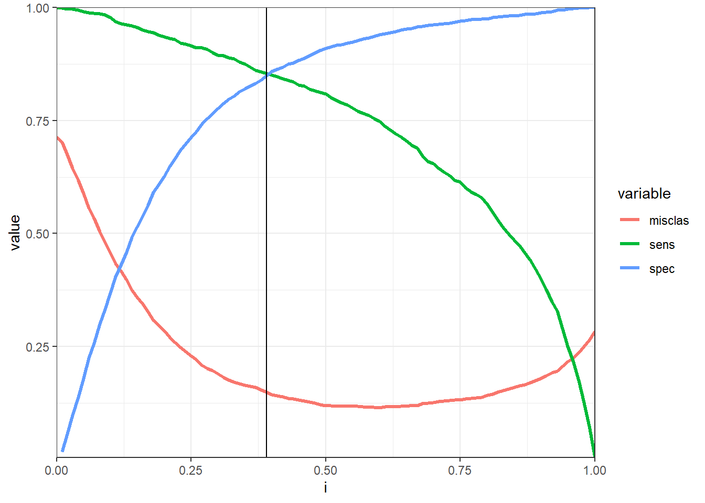
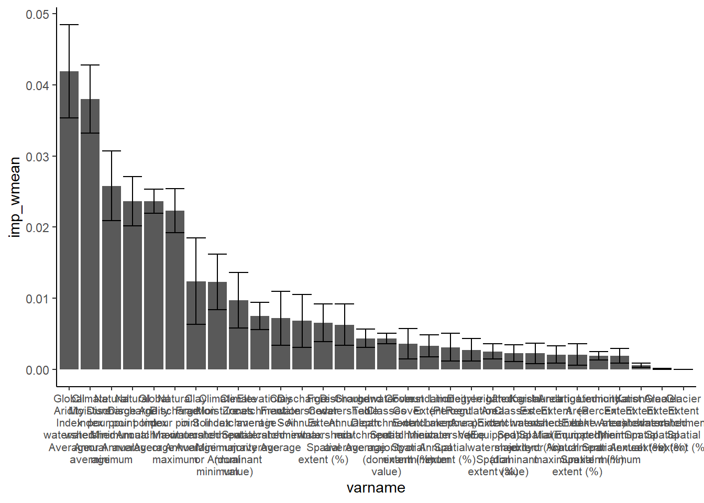
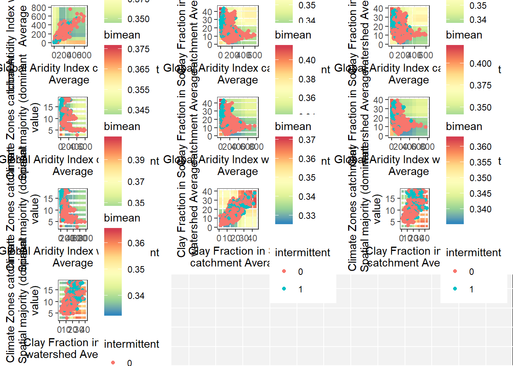

Model diagnostics
Last updated: 2020-04-16
Checks: 7 0
Knit directory: globalIRmap/
This reproducible R Markdown analysis was created with workflowr (version 1.6.1). The Checks tab describes the reproducibility checks that were applied when the results were created. The Past versions tab lists the development history.
Great! Since the R Markdown file has been committed to the Git repository, you know the exact version of the code that produced these results.
Great job! The global environment was empty. Objects defined in the global environment can affect the analysis in your R Markdown file in unknown ways. For reproduciblity it’s best to always run the code in an empty environment.
The command set.seed(20200414) was run prior to running the code in the R Markdown file. Setting a seed ensures that any results that rely on randomness, e.g. subsampling or permutations, are reproducible.
Great job! Recording the operating system, R version, and package versions is critical for reproducibility.
Nice! There were no cached chunks for this analysis, so you can be confident that you successfully produced the results during this run.
Great job! Using relative paths to the files within your workflowr project makes it easier to run your code on other machines.
Great! You are using Git for version control. Tracking code development and connecting the code version to the results is critical for reproducibility.
The results in this page were generated with repository version 20af343. See the Past versions tab to see a history of the changes made to the R Markdown and HTML files.
Note that you need to be careful to ensure that all relevant files for the analysis have been committed to Git prior to generating the results (you can use wflow_publish or wflow_git_commit). workflowr only checks the R Markdown file, but you know if there are other scripts or data files that it depends on. Below is the status of the Git repository when the results were generated:
Ignored files:
Ignored: .Rhistory
Ignored: .Rproj.user/
Ignored: .drake/config/
Ignored: .drake/data/
Ignored: .drake/drake/
Ignored: .drake/keys/
Ignored: .drake/scratch/
Ignored: packrat/lib-R/
Ignored: packrat/lib-ext/
Ignored: packrat/lib/
Untracked files:
Untracked: tuning_timeanalysis.R
Unstaged changes:
Modified: IntermittentAnalysis_MasterScript_reproduced.R
Modified: R/IRmapping_functions.R
Note that any generated files, e.g. HTML, png, CSS, etc., are not included in this status report because it is ok for generated content to have uncommitted changes.
These are the previous versions of the repository in which changes were made to the R Markdown (analysis/diagnostics.Rmd) and HTML (docs/diagnostics.html) files. If you’ve configured a remote Git repository (see ?wflow_git_remote), click on the hyperlinks in the table below to view the files as they were in that past version.
| File | Version | Author | Date | Message |
|---|---|---|---|---|
| Rmd | 20af343 | Mathis Loïc Messager | 2020-04-16 | Update license and add diagnostics |
Warning: package 'drake' was built under R version 3.6.3Warning: package 'reprex' was built under R version 3.6.3Warning: package 'data.table' was built under R version 3.6.3Warning: package 'future' was built under R version 3.6.3Warning: package 'future.apply' was built under R version 3.6.3Warning: package 'future.callr' was built under R version 3.6.3Warning: package 'furrr' was built under R version 3.6.3Warning: package 'kableExtra' was built under R version 3.6.3Reference data
We use streamflow data from a subset of streamgauging stations from the Global Runoff Data Center. These stations were closely inspected for streamflow time series quality and positional accuracy prior to being snapped/joined to the HydroSHEDS global river network. Only gauges with at least 10 years of streamflow data were included in the analysis, excluding any year with more than 20 days of missing data. A gauge was considered intermittent if it stopped flowing at least one day over the course of its record.
Predictor variables
The following variables, either directly included or derived from the HydroATLAS are used as candidates in training the random forest classification model.
| varname | Keyscale | Keystat | ID | Category | Attribute | Source.Data | Citation | Spatial.representation | Temporal.or.statistical.aggregation.or.other.association |
|---|---|---|---|---|---|---|---|---|---|
| Global Aridity Index catchment Average | c | av | C07 | Climate | Global Aridity Index | Global Aridity Index | Zomer et al. 2008 | catchment | Average |
| Global Aridity Index watershed Average | u | av | C07 | Climate | Global Aridity Index | Global Aridity Index | Zomer et al. 2008 | watershed | Average |
| Clay Fraction in Soil catchment Average | c | av | S01 | Soils & Geology | Clay Fraction in Soil | SoilGrids1km | Hengl et al. 2014 | catchment | Average |
| Clay Fraction in Soil watershed Average | u | av | S01 | Soils & Geology | Clay Fraction in Soil | SoilGrids1km | Hengl et al. 2014 | watershed | Average |
| Climate Zones catchment Spatial majority (dominant value) | c | mj | C01 | Climate | Climate Zones | GEnS | Metzger et al. 2013 | catchment | Spatial majority (dominant value) |
| Climate Moisture Index catchment Minimum or Annual minimum | c | mn | C08 | Climate | Climate Moisture Index | WorldClim & Global-PET | Hijmans et al. 2005 | catchment | Minimum or Annual minimum |
| Climate Moisture Index watershed Annual average | u | yr | C08 | Climate | Climate Moisture Index | WorldClim & Global-PET | Hijmans et al. 2005 | watershed | Annual average |
| Natural Discharge pour point Minimum or Annual minimum | p | mn | H01 | Hydrology | Natural Discharge | WaterGAP v2.2 | Döll et al. 2003 | pour point | Minimum or Annual minimum |
| Natural Discharge pour point Maximum or Annual maximum | p | mx | H01 | Hydrology | Natural Discharge | WaterGAP v2.2 | Döll et al. 2003 | pour point | Maximum or Annual maximum |
| Natural Discharge pour point Annual average | p | yr | H01 | Hydrology | Natural Discharge | WaterGAP v2.2 | Döll et al. 2003 | pour point | Annual average |
| Discharge watershed Annual min/max | NA | NA | NA | NA | NA | NA | NA | NA | NA |
| Discharge watershed Annual min/average | NA | NA | NA | NA | NA | NA | NA | NA | NA |
| Degree of Regulation pour point Value | p | va | H07 | Hydrology | Degree of Regulation | HydroSHEDS & GRanD | Lehner et al. 2011 | pour point | Value |
| Elevation catchment average - watershed average | NA | NA | NA | NA | NA | NA | NA | NA | NA |
| Forest Cover Extent catchment Spatial extent (%) | c | se | L07 | Landcover | Forest Cover Extent | GLC2000 | Bartholomé & Belward 2005 | catchment | Spatial extent (%) |
| Forest Cover Extent watershed Spatial extent (%) | u | se | L07 | Landcover | Forest Cover Extent | GLC2000 | Bartholomé & Belward 2005 | watershed | Spatial extent (%) |
| Glacier Extent catchment Spatial extent (%) | c | se | L11 | Landcover | Glacier Extent | GLIMS | GLIMS & NSIDC 2012 | catchment | Spatial extent (%) |
| Glacier Extent watershed Spatial extent (%) | u | se | L11 | Landcover | Glacier Extent | GLIMS | GLIMS & NSIDC 2012 | watershed | Spatial extent (%) |
| Land Cover Classes catchment Spatial majority (dominant value) | c | mj | L01 | Landcover | Land Cover Classes | GLC2000 | Bartholomé & Belward 2005 | catchment | Spatial majority (dominant value) |
| Groundwater Table Depth catchment Average | c | av | H10 | Hydrology | Groundwater Table Depth | Global Groundwater Map | Fan et al. 2013 | catchment | Average |
| Inundation Extent catchment Minimum or Annual minimum | c | mn | H03 | Hydrology | Inundation Extent | GIEMS-D15 | Fluet-Chouinard et al. 2015 | catchment | Minimum or Annual minimum |
| Inundation Extent watershed Minimum or Annual minimum | u | mn | H03 | Hydrology | Inundation Extent | GIEMS-D15 | Fluet-Chouinard et al. 2015 | watershed | Minimum or Annual minimum |
| Inundation Extent watershed Maximum or Annual maximum | u | mx | H03 | Hydrology | Inundation Extent | GIEMS-D15 | Fluet-Chouinard et al. 2015 | watershed | Maximum or Annual maximum |
| Irrigated Area Extent (Equipped) catchment Spatial extent (%) | c | se | L10 | Landcover | Irrigated Area Extent (Equipped) | HID v1.0 | Siebert et al. 2015 | catchment | Spatial extent (%) |
| Irrigated Area Extent (Equipped) watershed Spatial extent (%) | u | se | L10 | Landcover | Irrigated Area Extent (Equipped) | HID v1.0 | Siebert et al. 2015 | watershed | Spatial extent (%) |
| Karst Area Extent catchment Spatial extent (%) | c | se | S07 | Soils & Geology | Karst Area Extent | Rock Outcrops v3.0 | Williams & Ford 2006 | catchment | Spatial extent (%) |
| Karst Area Extent watershed Spatial extent (%) | u | se | S07 | Soils & Geology | Karst Area Extent | Rock Outcrops v3.0 | Williams & Ford 2006 | watershed | Spatial extent (%) |
| Lithological Classes catchment Spatial majority (dominant value) | c | mj | S06 | Soils & Geology | Lithological Classes | GLiM | Hartmann & Moosdorf 2012 | catchment | Spatial majority (dominant value) |
| Limnicity (Percent Lake Area) catchment Spatial extent (%) | c | se | H04 | Hydrology | Limnicity (Percent Lake Area) | HydroLAKES | Messager et al. 2016 | catchment | Spatial extent (%) |
| Limnicity (Percent Lake Area) watershed Spatial extent (%) | u | se | H04 | Hydrology | Limnicity (Percent Lake Area) | HydroLAKES | Messager et al. 2016 | watershed | Spatial extent (%) |
| Potential Evapotranspiration watershed Annual average | u | yr | C05 | Climate | Potential Evapotranspiration | Global-PET | Zomer et al. 2008 | watershed | Annual average |
| Potential Natural Vegetation Classes catchment Spatial majority (dominant value) | c | mj | L03 | Landcover | Potential Natural Vegetation Classes | EarthStat | Ramankutty & Foley 1999 | catchment | Spatial majority (dominant value) |
| Precipitation catchment Minimum or Annual minimum | c | mn | C04 | Climate | Precipitation | WorldClim v1.4 | Hijmans et al. 2005 | catchment | Minimum or Annual minimum |
| Precipitation catchment Annual min/max | NA | NA | NA | NA | NA | NA | NA | NA | NA |
| Precipitation watershed Annual average | u | yr | C04 | Climate | Precipitation | WorldClim v1.4 | Hijmans et al. 2005 | watershed | Annual average |
| Permafrost Extent catchment Spatial extent (%) | c | se | L12 | Landcover | Permafrost Extent | PZI | Gruber 2012 | catchment | Spatial extent (%) |
| Permafrost Extent watershed Spatial extent (%) | u | se | L12 | Landcover | Permafrost Extent | PZI | Gruber 2012 | watershed | Spatial extent (%) |
| Land Surface Runoff catchment Annual average | c | yr | H02 | Hydrology | Land Surface Runoff | WaterGAP v2.2 | Döll et al. 2003 | catchment | Annual average |
| Silt Fraction in Soil catchment Average | c | av | S02 | Soils & Geology | Silt Fraction in Soil | SoilGrids1km | Hengl et al. 2014 | catchment | Average |
| Silt Fraction in Soil watershed Average | u | av | S02 | Soils & Geology | Silt Fraction in Soil | SoilGrids1km | Hengl et al. 2014 | watershed | Average |
| Sand Fraction in Soil catchment Average | c | av | S03 | Soils & Geology | Sand Fraction in Soil | SoilGrids1km | Hengl et al. 2014 | catchment | Average |
| Sand Fraction in Soil watershed Average | u | av | S03 | Soils & Geology | Sand Fraction in Soil | SoilGrids1km | Hengl et al. 2014 | watershed | Average |
| Snow Cover Extent catchment Maximum or Annual maximum | c | mx | C09 | Climate | Snow Cover Extent | MODIS/Aqua | Hall & Riggs 2016 | catchment | Maximum or Annual maximum |
| Snow Cover Extent catchment Annual average | c | yr | C09 | Climate | Snow Cover Extent | MODIS/Aqua | Hall & Riggs 2016 | catchment | Annual average |
| Snow Cover Extent watershed Annual average | u | yr | C09 | Climate | Snow Cover Extent | MODIS/Aqua | Hall & Riggs 2016 | watershed | Annual average |
| Organic Carbon Content in Soil catchment Average | c | av | S04 | Soils & Geology | Organic Carbon Content in Soil | SoilGrids1km | Hengl et al. 2014 | catchment | Average |
| Organic Carbon Content in Soil watershed Average | u | av | S04 | Soils & Geology | Organic Carbon Content in Soil | SoilGrids1km | Hengl et al. 2014 | watershed | Average |
| Soil Water Content catchment Minimum or Annual minimum | c | mn | S05 | Soils & Geology | Soil Water Content | Global Soil-Water Balance | Trabucco & Zomer 2010 | catchment | Minimum or Annual minimum |
| Soil Water Content catchment Annual average | c | yr | S05 | Soils & Geology | Soil Water Content | Global Soil-Water Balance | Trabucco & Zomer 2010 | catchment | Annual average |
| Soil Water Content watershed Annual average | u | yr | S05 | Soils & Geology | Soil Water Content | Global Soil-Water Balance | Trabucco & Zomer 2010 | watershed | Annual average |
| Air Temperature catchment Minimum or Annual minimum | c | mn | C03 | Climate | Air Temperature | WorldClim v1.4 | Hijmans et al. 2005 | catchment | Minimum or Annual minimum |
| Air Temperature catchment Maximum or Annual maximum | c | mx | C03 | Climate | Air Temperature | WorldClim v1.4 | Hijmans et al. 2005 | catchment | Maximum or Annual maximum |
| Air Temperature catchment Annual average | c | yr | C03 | Climate | Air Temperature | WorldClim v1.4 | Hijmans et al. 2005 | catchment | Annual average |
| Air Temperature watershed Annual average | u | yr | C03 | Climate | Air Temperature | WorldClim v1.4 | Hijmans et al. 2005 | watershed | Annual average |
| Wetland Extent catchment Class group 1 | c | g1 | L06 | Landcover | Wetland Extent | GLWD | Lehner & Döll 2004 | catchment | Class group 1 |
| Wetland Extent catchment Class group 2 | c | g2 | L06 | Landcover | Wetland Extent | GLWD | Lehner & Döll 2004 | catchment | Class group 2 |
| Wetland Extent watershed Class group 1 | u | g1 | L06 | Landcover | Wetland Extent | GLWD | Lehner & Döll 2004 | watershed | Class group 1 |
| Wetland Extent watershed Class group 2 | u | g2 | L06 | Landcover | Wetland Extent | GLWD | Lehner & Döll 2004 | watershed | Class group 2 |
Model training strategy
Explanation adapated from mlr3 manual
Resampling strategies are usually used to assess the performance of a learning algorithm. By subsetting the reference data (that we intend to predict) into independent training and testing sets, resampling allows us to assess how our algorithm may perform on a previously untested datasets.
Hyperparameters are second-order parameters of machine learning models that, while often not explicitly optimized during the model estimation process, can have important impacts on the outcome and predictive performance of a model. Typically, hyperparameters are fixed before training a model. However, because the output of a model can be sensitive to the specification of hyperparameters, it is often recommended to make an informed decision about which hyperparameter settings may yield better model performance. In many cases, hyperparameter settings may be chosen a priori, but it can be advantageous to try different settings before fitting your model on the training data. This process is often called ‘tuning’ your model.
In order to obtain unbiased performance estimates, all parts of the model building (preprocessing and model selection steps) should be included in the resampling, i.e., repeated for every pair of training/test data. Because not only final training but hyperparameter tuning requires resampling to avoid overfitting and to give accurate performance estimates, then our analysis relied on a nested resampling strategy.

Nested resampling illustration
The graphic above illustrates nested resampling for parameter tuning with 3-fold cross-validation in the outer and 4-fold cross-validation in the inner loop.
In the outer resampling loop, we have three pairs of training/test sets. On each of these outer training sets parameter tuning is done, thereby executing the inner resampling loop. This way, we get one set of selected hyperparameters for each outer training set. Then the learner is fitted on each outer training set using the corresponding selected hyperparameters. Subsequently, we can evaluate the performance of the learner on the outer test sets.
In our case, the inner resampling strategy consisted of tuning three random forest hyperparameters: the fraction of the dataset sampled without replacement to grow each tree in the forest, the number of predictor variables to randomly draw at each decision split in the trees, and the minimum size of end nodes. With this initial development of the model and in the absence of additional computational power, the inner resampling was performed by cross-validation with 2 folds. For each fold, hyperparameter tuning was conducted by randomly drawing twenty sets of values for all three tuned hyperparameters, training a random forest model with each set of values on the training data for that fold, and testing the performance of the model on the testing data for that fold (here 50% of the dataset). The highest performing hyperparameter values are then passed on to the outer resampling fold. Our performance measure in determing the best set of hyperparameter values was the weighted balanced accuracy, suited for imbalanced datasets. It is defined analogously to the definition in sklearn.
First, the sample weights \(w\) are normalized per class: \[ \hat{w}_i = \frac{w_i}{\sum_j 1(y_j = y_i) w_i}. }{ w_hat[i] = w[i] / sum((t == t[i]) * w[i]). }\]
The balanced accuracy is calculated as: \[\deqn{ \frac{1}{\sum_i \hat{w}_i} \sum_i 1(r_i = t_i) \hat{w}_i. }{ 1 / sum(w_hat) * sum((r == t) * w_hat). } }\]
Outer resampling was performed with repeated cross-validation using five folds and two repeatitions.
The random forest algorithm is known to produce biased estimates in binary classification tasks if the two classes are unequally represented in the training data. In the case of this study, the classes were unequally represented with almost three times as many perennial as there were intermittent rivers. The minority class (here intermittent rivers) was therefore oversampled with replacement for training purposes.
All RF instances were trained with 500 tree, using the Gini index as splitting rule, and grown as probability trees following Malley et al.’s 2012 approach with the mlr3 and ranger package.
Model performance
print(misclass_plot)Warning: Removed 1 rows containing missing values (geom_path).
Variable importance
print(vimp_plot)
Bivariate partial dependence plots
plot(pd_plot) # Map of gauges
sessionInfo()R version 3.6.2 (2019-12-12)
Platform: x86_64-w64-mingw32/x64 (64-bit)
Running under: Windows 10 x64 (build 18363)
Matrix products: default
locale:
[1] LC_COLLATE=English_United States.1252
[2] LC_CTYPE=English_United States.1252
[3] LC_MONETARY=English_United States.1252
[4] LC_NUMERIC=C
[5] LC_TIME=English_United States.1252
attached base packages:
[1] stats graphics grDevices utils datasets methods base
other attached packages:
[1] tidyselect_1.0.0 kableExtra_1.1.0 furrr_0.1.0
[4] future.callr_0.5.0 future.apply_1.4.0 future_1.16.0
[7] data.table_1.12.8 mlr3verse_0.1.1 mlr3viz_0.1.1
[10] mlr3tuning_0.1.2 mlr3pipelines_0.1.2 mlr3learners_0.1.6
[13] mlr3filters_0.1.1 mlr3db_0.1.5 mlr3_0.1.7
[16] ggpubr_0.2.5 magrittr_1.5 xlsx_0.6.2
[19] edarf_1.1.1 ranger_0.12.1 paradox_0.1.0
[22] bigstatsr_1.1.4 rprojroot_1.3-2 sf_0.8-1
[25] gridExtra_2.3 ggplot2_3.2.1 plyr_1.8.5
[28] stringr_1.4.0 profvis_0.3.6 tictoc_1.0
[31] reprex_0.3.0 drake_7.12.0
loaded via a namespace (and not attached):
[1] colorspace_1.4-1 ggsignif_0.6.0 class_7.3-15 fs_1.4.0
[5] rstudioapi_0.11 farver_2.0.3 listenv_0.8.0 fansi_0.4.1
[9] xml2_1.3.0 codetools_0.2-16 doParallel_1.0.15 knitr_1.28
[13] workflowr_1.6.1 packrat_0.5.0 rJava_0.9-11 readr_1.3.1
[17] bigparallelr_0.2.3 compiler_3.6.2 httr_1.4.1 backports_1.1.5
[21] assertthat_0.2.1 Matrix_1.2-18 lazyeval_0.2.2 cli_2.0.1
[25] later_1.0.0 htmltools_0.4.0 prettyunits_1.1.1 tools_3.6.2
[29] igraph_1.2.5 gtable_0.3.0 glue_1.3.1 dplyr_0.8.4
[33] Rcpp_1.0.3 vctrs_0.2.3 iterators_1.0.12 xfun_0.12
[37] globals_0.12.5 ps_1.3.2 xlsxjars_0.6.1 mlr3measures_0.1.1
[41] rvest_0.3.5 lifecycle_0.1.0 scales_1.1.0 lgr_0.3.3
[45] hms_0.5.3 promises_1.1.0 flock_0.7 parallel_3.6.2
[49] yaml_2.2.1 stringi_1.4.6 highr_0.8 foreach_1.4.8
[53] e1071_1.7-3 checkmate_2.0.0 bigassertr_0.1.2 filelock_1.0.2
[57] mmpf_0.0.5 storr_1.2.1 rlang_0.4.4 pkgconfig_2.0.3
[61] evaluate_0.14 lattice_0.20-38 purrr_0.3.3 labeling_0.3
[65] htmlwidgets_1.5.1 cowplot_1.0.0 processx_3.4.2 R6_2.4.1
[69] base64url_1.4 txtq_0.2.0 DBI_1.1.0 pillar_1.4.3
[73] whisker_0.4 withr_2.1.2 units_0.6-5 tibble_2.1.3
[77] crayon_1.3.4 uuid_0.1-4 KernSmooth_2.23-16 rmarkdown_2.1
[81] progress_1.2.2 grid_3.6.2 callr_3.4.3 git2r_0.26.1
[85] mlr3misc_0.1.8 digest_0.6.25 classInt_0.4-2 webshot_0.5.2
[89] httpuv_1.5.2 munsell_0.5.0 viridisLite_0.3.0